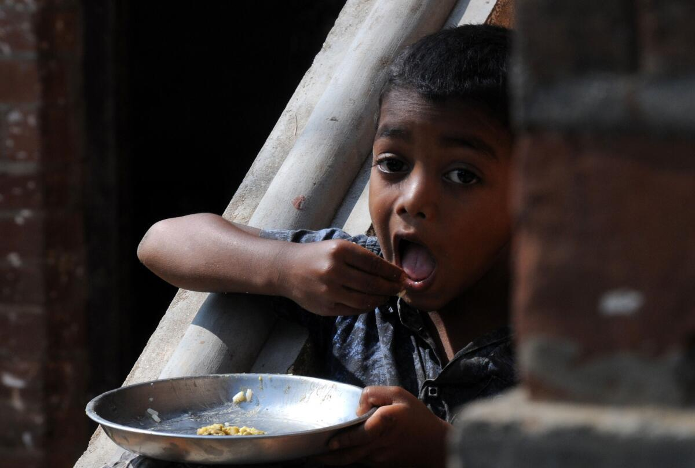
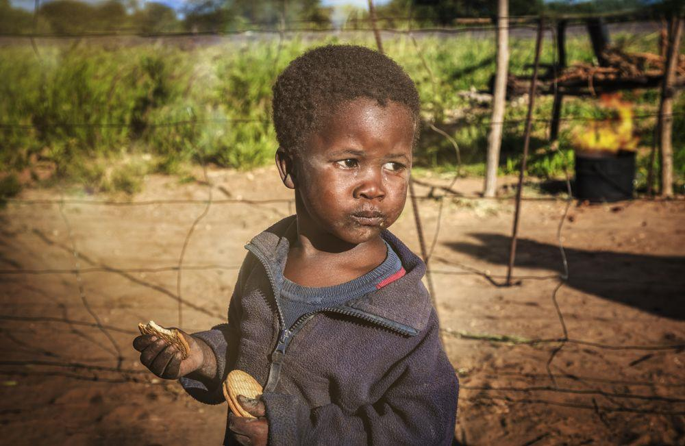
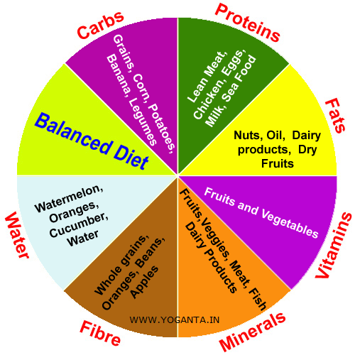

World Food Problems
The world food problem remains a pressing global challenge as the intricate interplay of population growth, environmental factors, and socio-economic disparities continues to strain food systems. With the global population steadily advancing towards 9 billion by 2050, there is an urgent need to enhance food production, making it both sustainable and resilient. Agriculture faces the impacts of climate change, land degradation, and water scarcity, necessitating innovative and adaptive approaches. However, even when sufficient food is produced, issues of distribution and access persist, amplifying the prevalence of food insecurity. Poverty and inequality further compound the problem, as many individuals lack the financial means to secure a nutritious diet. Climate change adds another layer of complexity, with extreme weather events disrupting agricultural practices and supply chains. Tackling the world food problem demands a comprehensive strategy that addresses these multifaceted challenges, emphasizing sustainable agricultural practices, poverty reduction, and equitable access to food resources. Global cooperation and concerted efforts across sectors are essential to build a resilient and inclusive food system for the future.
-
Under-nourishment
Under-nourishment refers to a condition where individuals do not receive adequate nutrition to maintain good health and meet their basic dietary needs. It is a form of malnutrition characterized by a deficiency of essential nutrients, such as vitamins, minerals, proteins, and calories. Under-nourishment can have severe consequences on physical and mental health, particularly for vulnerable populations such as children, pregnant women, and the elderly. Causes of under-nourishment are often multifaceted and can include factors like poverty, lack of access to nutritious food, insufficient agricultural productivity, limited healthcare, and political instability. In many cases, under-nourishment is linked to broader issues such as food insecurity, inadequate social support systems, and economic disparities. Persistent under-nourishment can lead to a range of health problems, including stunted growth, weakened immune systems, cognitive impairments, and increased susceptibility to diseases. It can also perpetuate a cycle of poverty and hinder social and economic development within communities and nations. Addressing under-nourishment requires a holistic approach that combines efforts to improve food security, enhance agricultural practices, promote education on nutrition, and establish social safety nets. International organizations, governments, NGOs, and local communities play crucial roles in implementing sustainable solutions to alleviate under-nourishment and improve overall global health and well-being.
-
Malnourishment
Malnourishment poses a significant and pervasive challenge to global health, manifesting in various forms that compromise the well-being of individuals and communities. Whether characterized by insufficient intake of essential nutrients, overconsumption leading to obesity and related health issues, or an imbalanced distribution of vital elements, malnourishment affects diverse populations worldwide. Rooted in factors such as poverty, limited access to nutritious food, and inadequate healthcare, malnourishment is a complex issue with far-reaching consequences. It hampers physical and cognitive development, weakens immune systems, and perpetuates cycles of poverty and inequality. Addressing malnourishment requires a multifaceted approach encompassing education on nutrition, improved access to diverse and quality food, and enhancements in agricultural and healthcare systems. By tackling the underlying causes and implementing holistic solutions, we can work towards mitigating the impact of malnourishment and fostering a healthier, more resilient global population.
-
Balanced diet
A balanced diet is the cornerstone of maintaining good health and well-being. It involves consuming a variety of foods in appropriate proportions to ensure the body receives the essential nutrients it needs for optimal functioning. Incorporating a diverse range of fruits and vegetables provides vitamins, minerals, and fiber, while whole grains contribute complex carbohydrates and additional nutrients. Lean sources of protein, such as fish, poultry, beans, and tofu, support muscle growth and repair. Including dairy or suitable alternatives ensures a supply of calcium and vitamin D crucial for bone health. Healthy fats from sources like avocados, nuts, and olive oil are vital for energy and cellular function. Hydration through an adequate intake of water is fundamental for overall bodily functions. Conversely, limiting added sugars and processed foods helps prevent health issues like obesity. A balanced diet not only fosters physical health but also aids in maintaining a healthy weight, reducing the risk of chronic diseases, and supporting mental well-being. Customizing dietary choices based on individual needs and consulting with healthcare professionals can contribute to a sustainable and personalized approach to nutrition.